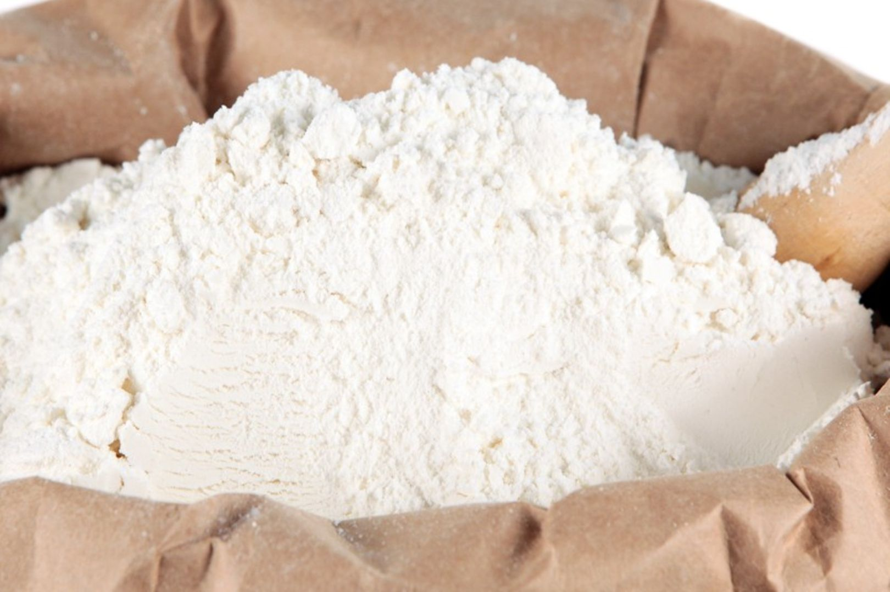

Maize Flour Suppliers in Tanzania
Are you looking for reliable maize flour suppliers in Tanzania for wholesale business in the Democratic Republic of Congo (DRC)? Kigoma–Congo Business Link facilitates connections between wholesale buyers and potential Tanzanian suppliers.


.jpeg)
Wholesale Maize Flour from Tanzania
Tanzania has agricultural and food-processing businesses that may offer maize flour for local and regional trade. Buyers interested in purchasing maize flour in wholesale quantities can compare available supplier offers before making a decision.
Kigoma–Congo Business Link helps buyers identify potential suppliers and compare offers according to:
- Required quantity and order size.
- Product quality and flour specifications.
- Packaging type and bag sizes.
- Supplier prices and payment conditions.
- Collection point and transport arrangements.
Maize Flour Buyers in DR Congo
We welcome wholesale enquiries from businesses, food distributors, shops and traders in Kalemie, Baraka, Uvira, Bukavu, Goma, Butembo and other markets across the Democratic Republic of Congo.
Buyers can share their requirements so that suitable supplier offers and possible transport options can be explored.
How Our Maize Flour Business Connection Works
- Tell us the quantity of maize flour you need.
- Specify your destination in DR Congo or another market.
- Share your preferred quality, packaging and other requirements.
- We identify potential suppliers and compare available offers.
- We facilitate communication and help assess transport options.
Transport and Logistics
Transport planning depends on the supplier's location, order quantity, packaging, destination and available transport services. Buyers can request assistance in exploring suitable cargo arrangements from Tanzania towards DR Congo and other regional markets.
Fournisseurs de farine de maïs en Tanzanie
Vous recherchez des fournisseurs de farine de maïs en Tanzanie pour votre commerce de gros en République Démocratique du Congo (RDC) ? Kigoma–Congo Business Link facilite la mise en relation entre les acheteurs et les fournisseurs potentiels en Tanzanie.
Achat de farine de maïs en gros
Nous aidons les acheteurs à identifier des fournisseurs potentiels et à comparer les offres selon les quantités, la qualité du produit, le type d'emballage, les prix et les conditions commerciales.
Nous accueillons les demandes des commerçants et distributeurs de Kalemie, Baraka, Uvira, Bukavu, Goma, Butembo et d'autres marchés de la RDC.
Comment fonctionne notre service ?
- Indiquez la quantité de farine de maïs souhaitée.
- Précisez votre destination.
- Communiquez vos exigences concernant la qualité et l'emballage.
- Nous identifions des fournisseurs potentiels et comparons les offres disponibles.
- Nous facilitons les échanges commerciaux et l'étude des possibilités de transport.
Frequently Asked Questions | Questions fréquentes
Where can I find maize flour suppliers in Tanzania?
Contact Kigoma–Congo Business Link for assistance in identifying potential Tanzanian suppliers and comparing available wholesale offers.
Can maize flour be supplied to DR Congo?
Buyers can explore supplier offers and possible transport arrangements for destinations across DR Congo.
What information should I provide when requesting an offer?
Share your required quantity, destination, packaging preferences and product quality requirements.
Où trouver des fournisseurs de farine de maïs en Tanzanie ?
Contactez Kigoma–Congo Business Link pour obtenir de l'aide dans l'identification de fournisseurs potentiels en Tanzanie.
Peut-on organiser le transport de farine de maïs vers la RDC ?
Nous aidons les acheteurs à étudier les offres des fournisseurs et les possibilités de transport vers différentes destinations en RDC.
Request a Maize Flour Offer | Demandez une offre
Send us your required quantity, destination, packaging preferences and quality requirements to begin your enquiry.
Contact Us on WhatsApp